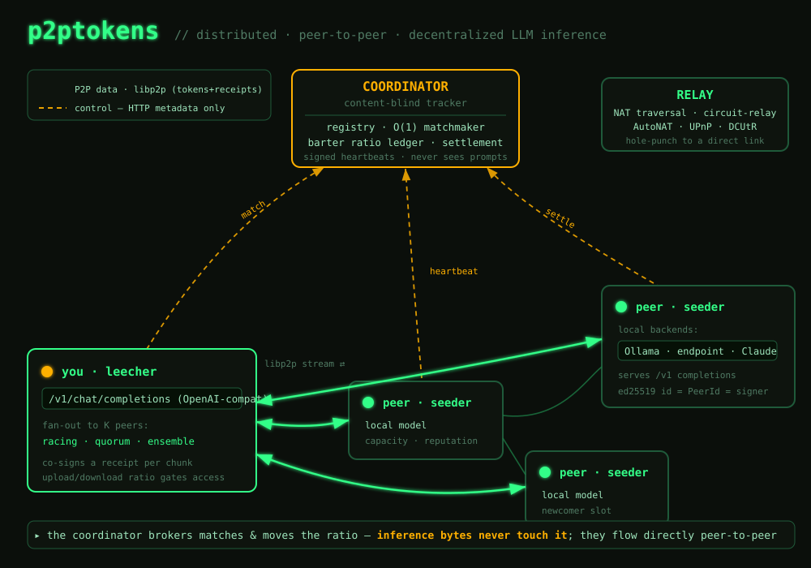

p2ptokens documentation
A distributed, peer-to-peer, decentralized network for LLM inference. One app both seeds (serves completions from a local model) and leeches (consumes completions from peers), gated by a no-free-lunch upload/download ratio — the seed/leech incentive model of the BitTorrent protocol, applied to inference. A central coordinator brokers matches but never sees your data; the inference bytes flow directly peer-to-peer.
Overview
p2ptokens has three pieces:
| Component | Binary | Role |
|---|---|---|
| Client | p2ptokens | Unified seeder + leecher; exposes a local OpenAI-compatible /v1 endpoint and a dashboard. |
| Coordinator | p2p-coordinator | Content-blind tracker: registry, O(1) matchmaker, barter-ratio ledger, co-receipt settlement. |
| Desktop | p2ptokens-desktop | Tauri app that embeds the client in a native window. |
You bring your own model backend (Ollama, any OpenAI-compatible endpoint, or Claude). See the architecture for the full picture.
Quickstart
Requires Ollama with a model pulled.
ollama pull llama3.2:3b
cargo build
# terminal 1 — the tracker
target/debug/p2p-coordinator
# terminal 2 — a seeder (serves your local Ollama)
target/debug/p2ptokens --http 127.0.0.1:8080 --data-dir ./.p2p/a
# terminal 3 — a leecher
target/debug/p2ptokens --http 127.0.0.1:8081 --data-dir ./.p2p/bOpen the dashboard at http://127.0.0.1:8081, or call the drop-in /v1 endpoint:
curl http://127.0.0.1:8081/v1/chat/completions \
-H 'content-type: application/json' \
-d '{"model":"llama3.2:3b","messages":[{"role":"user","content":"hi"}],"stream":true}'One-shot end-to-end smoke test: bash scripts/e2e.sh.
Install
Works on macOS, Linux, and Windows — no system dependencies (TLS is statically vendored, so Linux needs no OpenSSL).
Desktop app (recommended)
A double-click app (.dmg/.msi/.AppImage) that embeds the P2P daemon and opens the dashboard — still 100% peer-to-peer.
CLI
# prebuilt binaries
curl -fsSL https://p2ptokens.com/install.sh | sh # macOS / Linux
irm https://p2ptokens.com/install.ps1 | iex # Windows
# or with Cargo
cargo install --git https://github.com/pur4v/p2ptokens p2ptokens-client p2ptokens-coordinatorThe identity keypair is stored in the per-OS data dir (override with --data-dir).
API — /v1
The client serves a drop-in OpenAI-compatible surface. Point any tool's base URL at http://127.0.0.1:8081/v1.
| Route | Notes |
|---|---|
POST /v1/chat/completions | Streaming ("stream":true, SSE) and non-streaming. Response includes p2p_provider (the peer that served it). |
GET /v1/models | Network-wide model list. |
GET /api/status | Node status: peer id, ratio, offers, swarm. |
GET /api/config | Brand/network config the dashboard renders (white-label). |
/v1/responses are on the roadmap (needed for agent workflows); today the surface is chat-completions + models.Fan-out — one prompt, many peers
By default a request goes to one peer. You can fan a single prompt out to several:
| Mode | Behavior | Use for |
|---|---|---|
single | one provider (default; streams) | normal chat |
racing | dial K, return the fastest full completion | lowest latency |
quorum | dial K, return the majority answer + agreement count | redundancy / catch a bad peer |
ensemble | dial K, return all answers as separate choices | compare models |
Select it three ways:
# 1) request field
-d '{"model":"llama3.1:8b","fanout":"quorum","fanout_count":3,"messages":[...]}'
# 2) model-name prefix (works with any OpenAI client)
-d '{"model":"ensemble:llama3.1:8b","messages":[...]}'
# 3) the dashboard's Chat panel has a mode dropdown + peer countEach peer is metered by its own co-receipt; fan-out modes are non-streaming (they coordinate results).
Dashboard
The client serves an ASCII terminal-themed console with two tabs:
- Chat — multi-turn chat, conversation history (in your browser), a model picker, the fan-out selector, and per-message provider attribution.
- Network — this node (peer id, ratio, reputation, capacity), what you're seeding, and the live swarm.
Bring your own backend
Backends are configured via environment variables (matched by model name):
export P2P_OLLAMA=1 # local Ollama (on by default)
export P2P_ENDPOINT_URL=https://host/v1 P2P_ENDPOINT_KEY=... P2P_ENDPOINT_MODELS=a,b
export ANTHROPIC_API_KEY=sk-ant-... P2P_CLAUDE_MODELS=claude-3-5-sonnet-latestConfiguration
One p2ptokens.toml configures everything. Precedence (highest first): CLI flags > env vars > p2ptokens.toml > built-in defaults. With no file and no flags you join the public network with default branding.
[network] id="public" name="p2ptokens" private=false join_secret=""
[coordinator] url="https://coordinator.p2ptokens.com" listen="127.0.0.1:4000"
[relay] addr="" # optional relay multiaddr to reserve a slot on
[client] http="127.0.0.1:8080" p2p_listen="/ip4/0.0.0.0/tcp/0" capacity=4 relay=false
[brand] product_name="p2ptokens" tagline="…" accent="#33ff88" amber="#ffb000"
website="https://p2ptokens.com" github="…" logo_url=""Load with --config p2ptokens.toml (or place it in the working dir, or set $P2PTOKENS_CONFIG). Override any single value with a flag, e.g. --network-id acme --join-secret …. A fully-commented template ships as p2ptokens.example.toml.
Run your own network self-host
p2ptokens is a platform — fork it and run your org's own private, branded swarm.
cp p2ptokens.example.toml p2ptokens.toml # edit [network]/[coordinator]/[brand]
p2p-coordinator --config p2ptokens.toml # your coordinator (private → needs the secret)
p2ptokens --config p2ptokens.toml # each org machine joins the same network + secret| Set in config | Effect |
|---|---|
network.id | Isolation — peers on a different id can't open a stream to yours (scoped libp2p protocol). |
private + join_secret | Private gate — the coordinator rejects any request without Authorization: Bearer <secret>. |
coordinator.url / relay.addr | Point clients at your coordinator and relay. |
[brand] | White-label the dashboard live via /api/config — no rebuild. |
Running across NAT
Like a modern peer-to-peer client, p2ptokens does the full traversal stack: identify + AutoNAT + UPnP + circuit-relay + DCUtR hole-punching. Run one public relay; peers behind home routers reserve a /p2p-circuit slot and become reachable, with DCUtR upgrading to a direct connection when possible.
# public relay (no backends needed)
P2P_OLLAMA=0 target/debug/p2ptokens --relay --p2p-listen /ip4/0.0.0.0/tcp/4001
# a client using it
target/debug/p2ptokens --relay-addr /ip4/<relay-ip>/tcp/4001/p2p/<relay-peer-id>The economy
Access is a no-free-lunch upload/download ratio — you earn the right to leech by seeding. This is p2ptokens' core differentiator; it makes a market where strangers can trade compute without getting cheated.
- Ratio — served ÷ consumed tokens. Newcomers get a grace allowance, then must keep a healthy ratio to keep leeching.
- Signed co-receipts — output streams in chunks; the consumer co-signs the cumulative token count per chunk, and the provider only continues once it holds the receipt. Neither side can lie by more than one chunk.
- Reputation + optimistic unchoke — reputation-weighted matchmaking with reserved newcomer slots (which double as challenge-audits), so fresh peers can bootstrap.
- Signed heartbeats — every registration is signed by the peer's key, so you can't register under someone else's identity (Sybil resistance).
- No money in v1 — pure barter. Paid credits/payouts are a later, deliberately deferred step.
Architecture
The control plane (HTTP, metadata only) and the data plane (libp2p, peer-to-peer) are separate — the coordinator brokers matches and moves the ratio, but the inference bytes never touch it.

Security & privacy
- Content-blind coordinator — it brokers matches and moves the ratio; it never sees or carries a single inference byte.
- Authenticated transport — libp2p Noise (encrypted + mutually authenticated) over TCP + Yamux; dials pin the target
PeerId, so a tampered address can't redirect you to another peer. - Signed co-receipts & heartbeats — the anti-cheat and anti-Sybil core.
- Hardened tracker inputs — structural caps + valid-
PeerIdchecks + a request body-size limit.
Reliability & abuse limits
A swarm is only useful if a flaky, slow, or hostile peer can't wedge your request. p2ptokens hardens the failure paths, not just the happy path:
- Automatic seeder failover — if a seeder disconnects, has a stale address, or the dial fails, the leecher re-matches to a different seeder (bounded attempts, backoff, and a per-request tried-peers exclusion set). Failover only happens before any token is streamed, so answers are never duplicated.
- Dial / first-token / idle timeouts — a seeder that never connects, never sends a first token, or goes silent mid-stream is dropped and the request re-matched — no infinite hangs.
- Seeder-set input-size limit, honored by matchmaking — each node advertises a
max_input_bytesit will accept; the coordinator skips seeders whose limit is smaller than the request, and the seeder enforces it on receipt — a consumer can't force a peer to process an oversized/abusive payload. - Output-token cap — each node caps generated tokens per job (
max_output_tokens) so a consumer can't request an unbounded generation on someone else's compute. - Settle retry — a provider retries settlement so a transient coordinator hiccup doesn't drop credit for work already done.
- Job TTL sweep — abandoned jobs (race losers, crashed consumers) are swept so they can't accumulate.
Configure per node in p2ptokens.toml: [client] max_input_bytes, max_output_tokens.
FAQ
Do I need a GPU?
Only if you want to seed a model fast. You can run leech-only; but access is ratio-gated, so a machine that serves nothing will hit the newcomer-grace limit and then be throttled until it seeds.
Does the coordinator see my prompts?
No. It only brokers matches and moves the ratio. Your prompt goes directly to the serving peer over an encrypted libp2p stream. (That peer does see it — see the honest limit above.)
Can I run a fully private network for my org?
Yes — see Run your own network: set a network.id (isolation) and a join_secret (private gate), and brand it via [brand].
Is there money involved?
Not in v1 — it's pure barter (a ratio). No wallets, no KYC.
What models can I use?
Anything your backend serves: local Ollama models, any OpenAI-compatible endpoint, or Claude (BYO credentials). Matching is by model name.